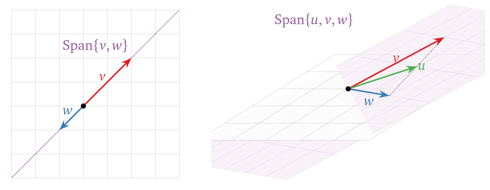

Linear Independence and Bases
Contents
13. Linear Independence and Bases#
13.1. Linear Dependence#
Sometimes the span of a set of vectors is ‘smaller’ than you expect from the number of vectors, as in the picture below. This means that (at least) one of the vectors is redundant: it can be removed without affecting the span.
In each case, one vector is in the span of the others — so it doesn’t make the span bigger.

A set of \(k\) vectors \(\{v_1, \ldots, v_k\}\) is linearly dependent if one of the vectors can be written as a linear combination of the others.
Example
Linearly dependent set of vectors
This set of three vectors are linearly dependent since the third vector can be written as a linear combination of the first two.
Linearly independent set of vectors
This set of three vectors are linearly independent since none of the vectors is a linear combination of the other two.
13.2. Linear Independence#
The above formulation of linear dependence is not very easy to check. Fortunately, there is a defintion of the opposite — linear independence — which is usually taken as the standard definition.
A set of vectors \(\{v_1,\ldots,v_n\}\) is linearly independent if and only if the equation
has only the trivial solution, where
Otherwise, the set \(\{v_1,\ldots,v_n\}\) is linearly dependent.
To check whether a set of vectors is linearly independent we simply form the matrix \(A\) whose columns are the vectors \(v_1, \ldots, v_n\) then solve \(Ax = 0\). If there are any solutions except for \(Ax = 0\) then the vectors are linearly independent. The vector \(x = 0\) is always a solution of \(Ax = 0\) which is why we exclude the ‘trivial solution’ \(x = 0\)…
Example
Is the following set of vectors linearly independent?
Solution
This is equivalent to the homogeneous vector equation
Solve this by forming by row reducing the matrix formed from the column vectors:
We have one free variable \(x_3\) and the solution is:
Which is equivavlent to
for any \(t\in\mathbb{R}\).
We conclude that there are non-trivial solutions to \(Ax = 0\). The three vectors are linearly dependent and equation of linear dependence is
13.3. Bases#
Recall that the span of a set of vectors is all linear combination of the vectors. If a set of vectors is linearly dependent, then we can remove one or more vectors from it without changing the span. By removing these vectors until the remaining vectors are linearly independent, we arrive at a basis.
Given a set of vectors \(\{v_1,\ldots,v_n\}\), a basis for \(\mathrm{Span}\{v_1,\ldots,v_n\}\) is a linearly independent set of vectors \(\{w_1,\ldots,w_k\}\) such that \(\mathrm{Span}\{w_1,\ldots,w_k\}=\mathrm{Span}\{v_1,\ldots,v_n\}\).
It’s easiest to understand this definition by following a recipe for calculating a basis.
How to calculate a basis
Let \(\left\{v_1,\ldots,v_n\right\}\) be a set of vectors.
Then the pivot columns in the matrix
form a basis for \(\left\{v_1,\ldots,v_n\right\}\).
Example
Find a basis for
Solution
Form a matrix from the vectors and reduce to echelon form. The vectors are the same as the ones in the previous example, so we already know its RREF:
This tells us that the third vector (corresponding to a free variable in the matrix \(A\)) can be written as a linear combination of the other two (corresponding to pivots). So we discard the third column; the remaining columns form a basis:
\(\left\{\begin{pmatrix}1\\1\\1\end{pmatrix},\begin{pmatrix}1\\-1\\2\end{pmatrix}\right\}\) is a basis.